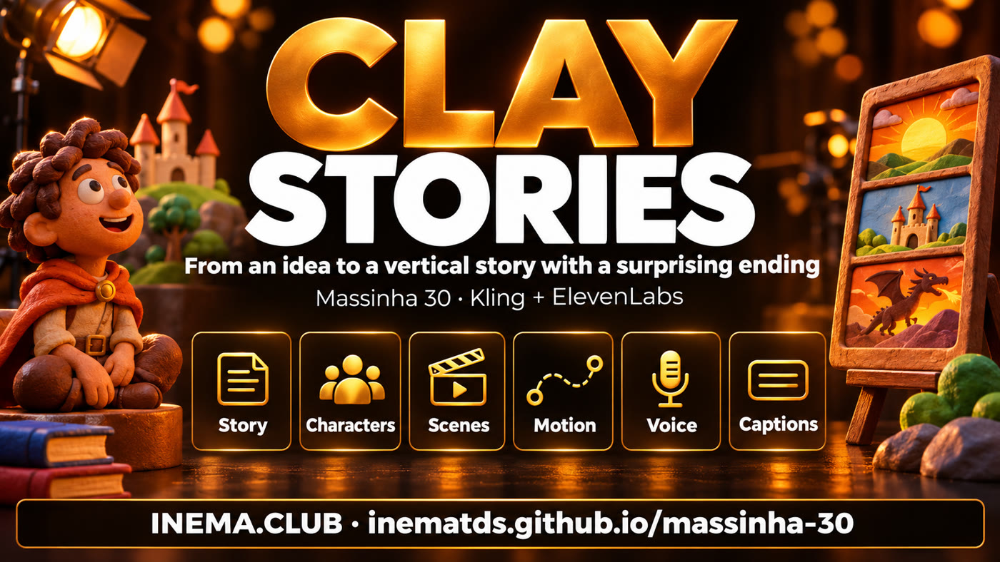

1
Something disappears
Lia notices that her fabric scraps are going missing. A small, visible problem that is easy to follow.
Do you want to tell a story, but waste time trying to make the characters, scenes, and voice fit together? Massinha 30 is the reusable kit that helps creators turn an idea into a 30-second claymation film.
You have a story idea, but getting the characters, voice, and scenes to work together takes effort. Massinha 30 is a toolkit for creating short narratives with a handcrafted clay look. It organizes the approved script, character references, clips generated with Kling, ElevenLabs narration, and captions. It is for creators who want to repeat the process with new stories. Production requires access to the generation services; the guide is free to read.

Demonstration produced with Codex reference images, six Kling clips, and ElevenLabs narration. Captions and scene changes follow the voice’s actual timing. Audio in Portuguese; textual translation of the guide in English and Spanish.
Download MP4 · Version without captions · Download editable project
Audio credits: “Carefree” — Kevin MacLeod (incompetech.com), CC BY 4.0. “Réveil des oiseaux” — Joseph Sardin / BigSoundBank, CC0.
First, we show something concrete. Then, the character misunderstands it. The reveal changes their reaction — with no need to end on a moral lesson.
Lia notices that her fabric scraps are going missing. A small, visible problem that is easy to follow.
A little bird carries off the fabric. Lia is about to complain. The action moves the story forward.
The fabric is keeping chicks warm in a wet nest. Lia decides to help. The ending comes in a single gesture.
This is the proposed script for The Scrap Thief, an original story. Production begins only after the spoken words are approved.
A character sheet fixes the characters’ appearance. Each individual image becomes a short clip. The narration is created separately, and the captions follow the voice’s actual timing. The characters act silently: this workflow does not include lip sync.
Approval records, sending a scene to Kling, voice with character-level timing, captions, editing, and technical checks.
The story, images generated with the agent, continuity, clip downloads, sound sources, pronunciation, and the complete result with audio.
You do not need this section to understand what came before.
A skill is a folder of instructions that the agent follows. CLI means a program used in the terminal. FFmpeg handles editing; libass is the component that renders subtitles.
On Ubuntu/Debian, install the programs below. On Windows/macOS, install Python 3, Git, Node.js LTS, and FFmpeg from their official websites; the following commands assume these programs are available in a terminal.
sudo apt update sudo apt install python3 ffmpeg git nodejs npm npm install -g @openai/codex @klingai/cli-global codex login kling login ffmpeg -filters | grep subtitles
The last command must show the subtitles filter. If it does not, install an FFmpeg distribution with libass. Codex login must use your subscription. Kling login opens account authorization. The kit does not provide generation credits.
Python 3.10 or later; FFmpeg and ffprobe with libass subtitle support; the official Kling CLI authenticated with credits; an enabled voice and an ElevenLabs key in a private file. Images are created with image_gen through the agent's subscription. There is no video model to install on the server.
python3 --version ffmpeg -version ffprobe -version kling who_am_i
git clone https://github.com/linnoff88-dev/massinha-30.git cd massinha-30 python3 -m unittest discover -s tests -v
Open the folder in Codex and ask: “Use skills/massinha-30/SKILL.md to create a new claymation story”. The skill comes with the project; you do not need to change the global skills.
python3 skills/massinha-30/scripts/pipeline.py iniciar exemplos/retalhos.json --out runs/retalhos
Edit the six scenes in the example before starting a different story. The narracao.txt file shows all the text. After an explicit reply approving the words, record the actual response:
python3 skills/massinha-30/scripts/pipeline.py aprovar runs/retalhos --evidencia "I approve the script"
Do not run approval as a simple part of installation. Changing the script invalidates the approval.
Ask the agent for the character sheets and six individual images. Save 01.png to 06.png in runs/retalhos. Do not use a storyboard grid as the first frame. Test the command below without --enviar; add that option to generate a five-second scene.
python3 skills/massinha-30/scripts/pipeline.py kling runs/retalhos --cena 1 --imagem runs/retalhos/01.png
Repeat for all six scenes. Open runs/retalhos/kling-01.json and look for generation_id in the stdout response. Check with kling query_tasks followed by that ID. When it finishes, the result includes a video URL in works. Open that URL in a browser, save the video as 01.mp4 in the runs/retalhos folder, and repeat through 06.mp4. On the ARCKHÉ machine, downloads use ARCKHÉvox; on another computer, saving through the browser does not require that tool. Full instructions are in the references/producao.md file inside the skill.
In your ElevenLabs account, create a key in the developer/API keys area and copy the ID of the chosen voice from the voice library. An environment variable is a private value read by a program. Save these two values in a .env file outside the project folder, one per line: ELEVENLABS_API_KEY= followed by the key and ELEVENLABS_VOICE_ID= followed by the ID; do not publish this file. The command below is a dry run: it makes no external call and uses no credits. Add --env-file with your private file and --enviar to generate.
python3 skills/massinha-30/scripts/pipeline.py voz runs/retalhos
For a new take when the voice runs long, keep the same approved script and run the voice command with --tomada 2 --velocidade 1.1, along with the send and private-file options. There are up to three takes (1, 2, and 3), each billed by the provider; previous audio files are preserved. Do not change the number to retry a submission whose result is still uncertain: check the account history first. If it still does not fit, start another production with shorter text and get approval for the new words. The voice uses eleven_multilingual_v2; the API returns the timings used for the subtitles. Fish is a possible alternative, but no adapter is implemented in this kit. Agnes also has no adapter in this project.
With the six clips, narration, and subtitles in the folder, assemble the first cut. To include music and effects downloaded through ARCKHÉvox, add --musica and --efeitos with their respective paths. Record the source and license in fontes-audio.md.
python3 skills/massinha-30/scripts/pipeline.py montar runs/retalhos --ritmo-voz python3 skills/massinha-30/scripts/pipeline.py validar runs/retalhos/final.mp4
Outputs: limpo.mp4, final.mp4, and legendas.srt. Export at 720×1280, 30 fps, H.264/AAC, and 30 seconds. If the narration exceeds 29.5 seconds, adjust the delivery or approve a shorter version. Watch the entire film with sound: the technical validator does not check continuity or pronunciation.
Final 30-second video, 720×1280, 30 fps, and H.264/AAC. The 27.43-second narration was checked against an independent transcript, which matched the approved script. Visual review detected a reversed movement in the nest shot; that clip was corrected before editing. Eight local tests passed. Kling and ElevenLabs were used in the actual production.
To make scene changes follow the narration, add --ritmo-voz to the editing command. The edicao.json file records the actual duration of each shot.